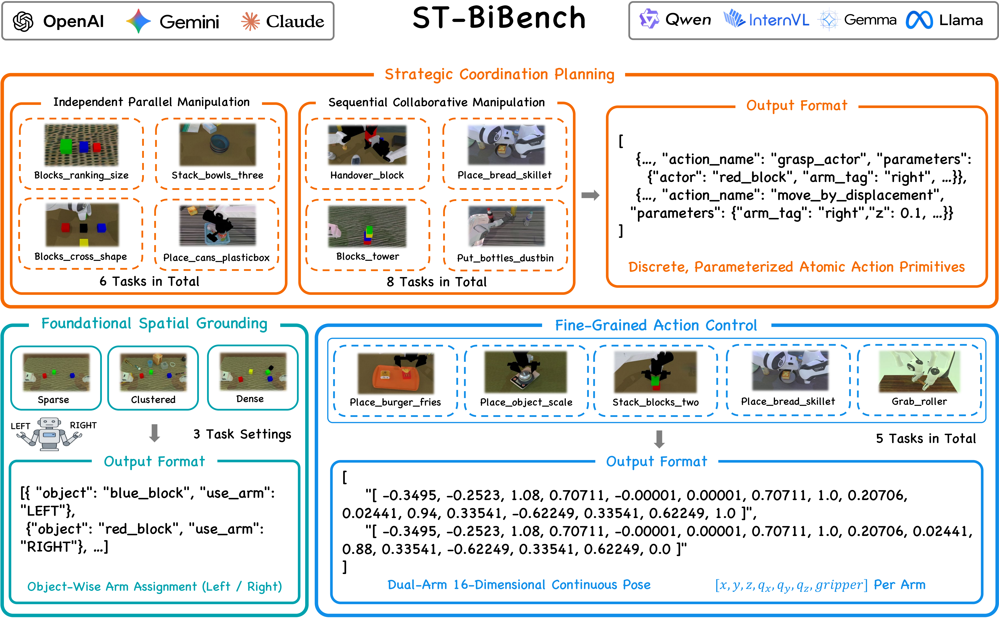
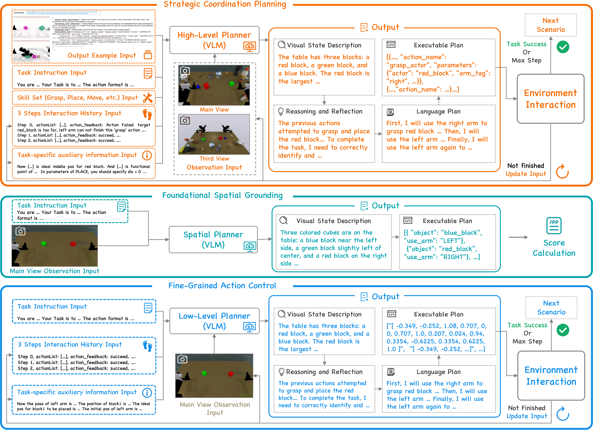
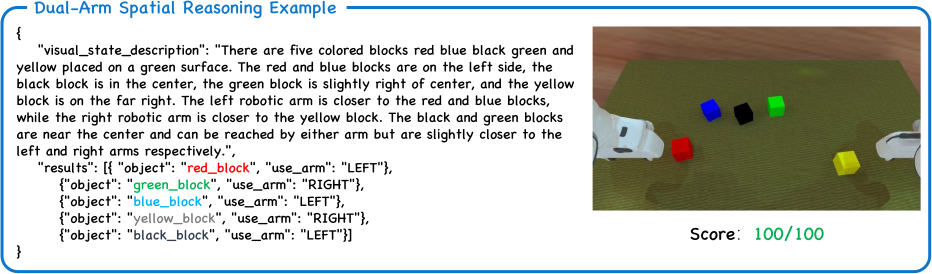
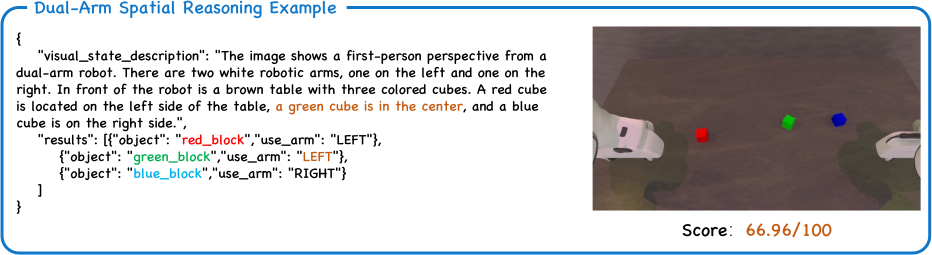
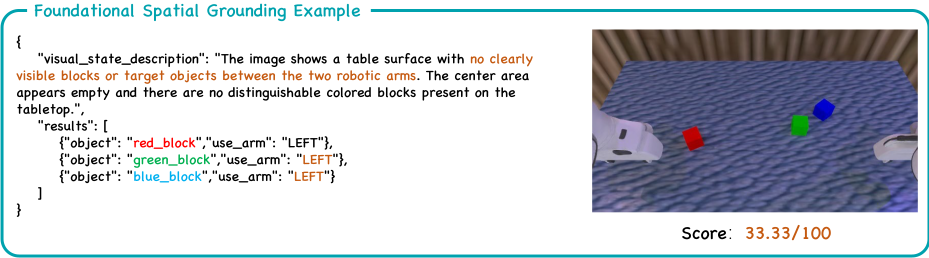
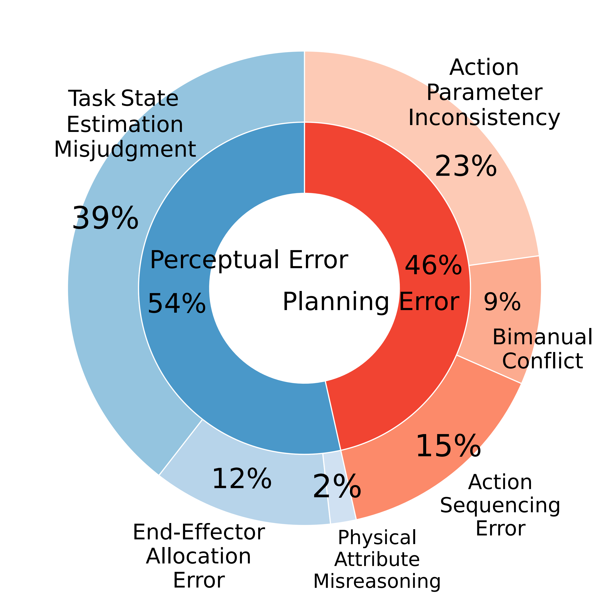
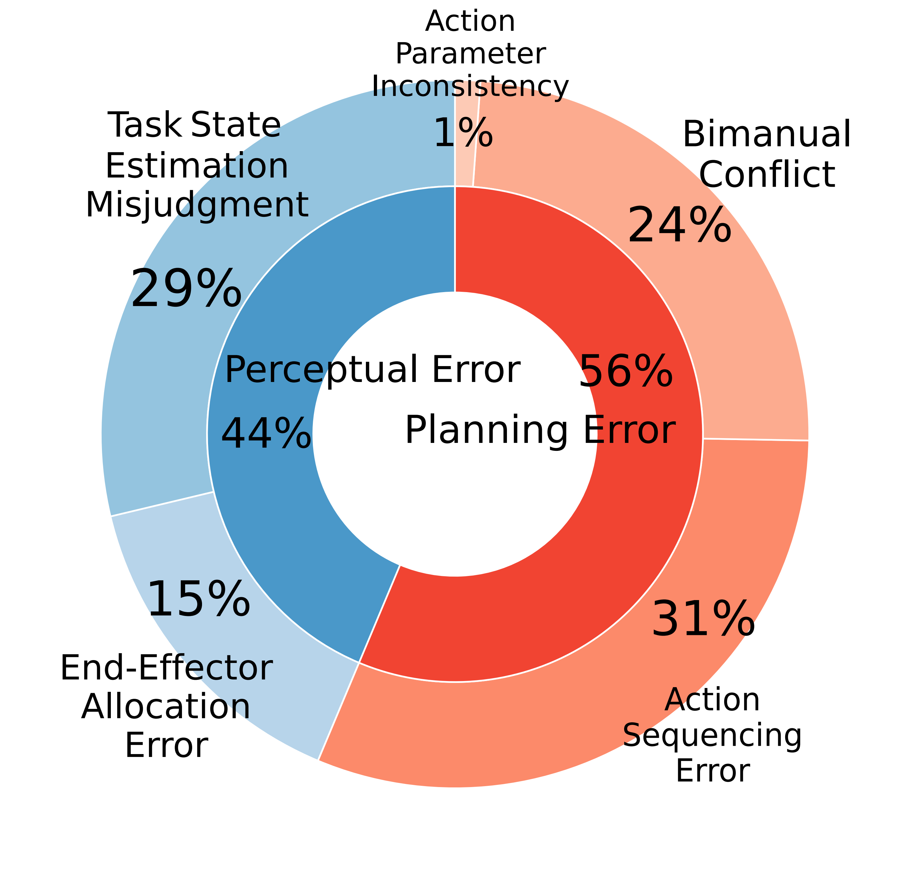

Multimodal Large Language Models (MLLMs) have significantly advanced embodied AI, and using them to benchmark robotic intelligence has become a pivotal trend. However, existing frameworks remain predominantly confined to single-arm manipulation, failing to capture the spatio-temporal coordination required for bimanual tasks like lifting a heavy pot. To address this, we introduce BiManiBench, a hierarchical benchmark evaluating MLLMs across three tiers: fundamental spatial reasoning, high-level action planning, and low-level end-effector control. Our framework isolates unique bimanual challenges, such as arm reachability and kinematic constraints, thereby distinguishing perceptual hallucinations from planning failures. Analysis of over 30 state-of-the-art models reveals that despite high-level reasoning proficiency, MLLMs struggle with dual-arm spatial grounding and control, frequently resulting in mutual interference and sequencing errors. These findings suggest the current paradigm lacks a deep understanding of mutual kinematic constraints, highlighting the need for future research to focus on inter-arm collision-avoidance and fine-grained temporal sequencing.
BiManiBench is the first hierarchical benchmark specifically designed to systematically evaluate the bimanual coordination capabilities of Multimodal Large Language Models (MLLMs). While current research in embodied AI has made significant strides in single-arm manipulation, bimanual coordination remains a formidable challenge. It requires more than just parallel execution; it demands rigorous spatiotemporal synchronization and dynamic role assignment to navigate complex kinematic constraints and prevent self-collisions. BiManiBench addresses this critical gap by providing a dedicated platform to analyze how foundation models manage the unique complexities of dual-arm physical interaction.

Figure 1: The hierarchical evaluation framework of BiManiBench, deconstructing bimanual coordination into three tiers of abstraction.
As illustrated in Figure 1, our benchmark features a comprehensive three-tier evaluation framework that deconstructs bimanual tasks into different levels of abstraction. Tier 1 (Dual-Arm Spatial Reasoning) assesses fundamental workspace awareness and arm allocation. Tier 2 (High-Level Action Planning) evaluates long-horizon reasoning under diverse coordination modes, including independent parallel tasks and complex sequential collaborative manipulation. Tier 3 (Low-Level End-Effector Control) tests the model’s ability to directly generate fine-grained, 16-dimensional continuous poses for precise bimanual synchronization. This hierarchical design allows researchers to isolate specific failure modes and distinguish between perceptual hallucinations and planning deficiencies.

Figure 2: The vision-driven agent pipeline designed for structured multimodal perception and reasoning.
The core of our evaluation is supported by a vision-driven agent pipeline designed for structured multimodal perception and reasoning (Figure 2). The agent processes diverse inputs—including multi-view observations (main and third-person views), language instructions, and task-specific auxiliary information—to bridge the gap between perception and action. Within each planning step, the MLLM functions as a central "brain" that generates a visual state description, performs internal reasoning and reflection, and formulates a language-based plan before outputting a structured, executable JSON format. This iterative closed-loop process ensures that the agent can adapt its coordination strategy based on the evolving environment state.
Through an extensive empirical study of over 30 state-of-the-art models—including proprietary systems like GPT-5, Gemini, and Claude—our results reveal a significant "reasoning-actuation gap." While modern MLLMs demonstrate proficiency in high-level strategic planning, they frequently struggle with fragile spatial grounding and precise dual-arm control. By pinpointing these bottlenecks, BiManiBench provides a foundational framework and diagnostic tool for the community to develop more robust, versatile robotic agents capable of human-like physical coordination.
This tier assesses fundamental spatial awareness and the ability to perform dynamic arm assignment. Given a visual observation, the model must determine the optimal manipulator while navigating strict kinematic constraints and limited reachability.

High-quality reasoning: Precise grounding and optimal arm allocation.

Average-quality reasoning: Valid logic but with minor spatial ambiguity.

Low-quality reasoning: Significant visual hallucinations and planning failures.
Evaluates logical reasoning and task decomposition in long-horizon scenarios. The model acts as a strategic planner, outputting a logical sequence of atomic primitives (e.g., Grasp, Place).
Task Success: handover_block (Sequential coordination)
The most challenging tier requiring precise motor control. The agent directly generates continuous 16-dimensional actions (7-DoF pose and 1-DoF gripper state per arm) for bimanual synchronization.
Task Success: stack_blocks_two (Precise motor control)
| Models | Task scenario settings | Avg. | ||
|---|---|---|---|---|
| Sparse | Dense | Cluttered | ||
| Gemini-2.0-flash | 95.45 | 98.69 | 92.00 | 95.38 |
| Gemini-2.5-flash | 95.77 | 96.76 | 92.88 | 95.13 |
| Gemini-2.5-pro | 96.14 | 96.77 | 92.12 | 95.01 |
| Claude-sonnet-4.5 | 96.12 | 94.78 | 92.23 | 94.38 |
| GPT-5 | 94.73 | 95.13 | 92.97 | 94.28 |
| GLM-4.5V | 91.48 | 97.77 | 93.00 | 94.08 |
| Qwen3-VL-32B-Instruct | 94.47 | 95.77 | 91.77 | 94.00 |
| Claude-sonnet-4 | 94.13 | 94.46 | 92.88 | 93.82 |
| Claude-sonnet-3.7 | 93.46 | 95.11 | 91.94 | 93.51 |
| InternVL3-78B | 92.80 | 97.07 | 90.16 | 93.34 |
| Ovis2-34B | 94.78 | 92.78 | 90.45 | 92.67 |
| GPT-4.1 | 93.43 | 92.48 | 91.76 | 92.55 |
| Ovis2-16B | 94.07 | 91.74 | 88.00 | 91.27 |
| Qwen3-VL-235B-A22B-Instruct | 86.82 | 93.50 | 90.33 | 90.22 |
| InternVL3.5-38B | 89.48 | 91.45 | 86.75 | 89.23 |
| GPT-4o | 89.02 | 91.13 | 87.10 | 89.08 |
| Qwen3-VL-30B-A3B-Instruct | 85.50 | 91.13 | 88.98 | 88.54 |
| InternVL3-38B | 81.82 | 92.13 | 89.85 | 87.94 |
| InternVL2.5-78B | 87.21 | 86.45 | 89.37 | 87.68 |
| Llama-4-Scout-17B-16E-Instruct | 85.49 | 87.75 | 86.16 | 86.47 |
| Gemma-3-27b-it | 92.40 | 81.12 | 85.78 | 86.43 |
| Qwen2.5-VL-32B-Instruct | 85.16 | 86.08 | 87.38 | 86.21 |
| InternVL2.5-38B | 79.16 | 85.47 | 85.99 | 83.54 |
| InternVL2.5-8B | 87.48 | 78.96 | 81.81 | 82.75 |
| InternVL3-8B | 79.53 | 69.79 | 86.79 | 78.70 |
| Ovis2.5-9B | 72.79 | 78.12 | 73.13 | 74.68 |
| Qwen2.5-VL-7B-Instruct | 75.20 | 65.83 | 79.34 | 73.46 |
| Gemma-3-12b-it | 80.09 | 57.17 | 70.22 | 69.16 |
| Llama-3.2-11B-Vision-Instruct | 54.64 | 53.62 | 54.01 | 54.09 |
| Models | Independent Parallel Manipulation | Sequential Collaborative Manipulation | Total Avg. | ||||||||||||||
|---|---|---|---|---|---|---|---|---|---|---|---|---|---|---|---|---|---|
| Avg. | P1 | P2 | R1 | R2 | S1 | S2 | Avg. | H1 | H2 | H3 | P3 | P4 | P5 | P6 | P7 | ||
| Gemini-2.5-Pro | 71.33 | 77 | 22 | 88 | 99 | 62 | 80 | 69.38 | 94 | 60 | 83 | 94 | 74 | 35 | 63 | 52 | 70.21 |
| GPT-5 | 76.67 | 64 | 50 | 92 | 100 | 86 | 68 | 59.75 | 69 | 24 | 86 | 90 | 71 | 17 | 58 | 63 | 67.00 |
| Gemini-2.5-flash | 67.17 | 60 | 36 | 82 | 93 | 64 | 68 | 59.00 | 78 | 28 | 78 | 94 | 61 | 35 | 45 | 53 | 62.50 |
| GPT-4.1 | 78.50 | 81 | 40 | 87 | 100 | 86 | 77 | 42.88 | 47 | 46 | 88 | 96 | 7 | 18 | 1 | 40 | 58.14 |
| Claude-sonnet-4 | 67.00 | 57 | 31 | 68 | 97 | 82 | 67 | 46.63 | 92 | 32 | 83 | 97 | 37 | 20 | 1 | 11 | 55.36 |
| Claude-sonnet-3.7 | 69.00 | 68 | 39 | 66 | 96 | 86 | 59 | 45.00 | 95 | 32 | 84 | 92 | 32 | 12 | 1 | 12 | 55.29 |
| Qwen3-VL-235B-A22B-Instruct | 58.67 | 36 | 1 | 75 | 90 | 83 | 67 | 50.88 | 96 | 63 | 86 | 92 | 5 | 17 | 2 | 46 | 54.21 |
| InternVL3-38B | 57.50 | 71 | 0 | 79 | 77 | 58 | 60 | 49.38 | 63 | 67 | 90 | 97 | 1 | 44 | 0 | 33 | 52.86 |
| Qwen3-VL-32B-Instruct | 54.67 | 41 | 16 | 88 | 75 | 40 | 68 | 50.88 | 93 | 63 | 75 | 96 | 14 | 36 | 8 | 22 | 52.50 |
| Qwen2.5-VL-32B-Instruct | 52.67 | 62 | 7 | 93 | 88 | 24 | 42 | 50.13 | 94 | 55 | 88 | 95 | 7 | 49 | 0 | 13 | 51.21 |
| Gemini-2.0-flash | 62.83 | 72 | 43 | 87 | 94 | 43 | 38 | 41.25 | 67 | 33 | 81 | 87 | 15 | 33 | 3 | 11 | 50.50 |
| GPT-4o | 52.33 | 68 | 22 | 50 | 74 | 37 | 63 | 45.50 | 88 | 60 | 85 | 95 | 5 | 16 | 0 | 15 | 48.43 |
| InternVL3-78B | 56.33 | 72 | 7 | 69 | 81 | 39 | 70 | 33.63 | 9 | 5 9 | 26 | 96 | 4 | 23 | 0 | 16 | 43.36 |
| InternVL2.5-38B | 45.33 | 1 | 0 | 83 | 70 | 62 | 56 | 33.00 | 92 | 11 | 84 | 3 | 7 | 47 | 0 | 20 | 38.29 |
| Ovis2-34B | 45.50 | 80 | 2 | 77 | 82 | 1 | 31 | 31.75 | 96 | 3 | 14 | 94 | 10 | 27 | 0 | 10 | 37.64 |
| InternVL2.5-78B | 47.83 | 56 | 22 | 73 | 76 | 27 | 33 | 29.51 | 80 | 0 | 84 | 33 | 1 | 13 | 0 | 25 | 37.36 |
| InternVL3.5-38B | 41.50 | 72 | 0 | 6 | 81 | 52 | 38 | 33.13 | 94 | 11 | 18 | 93 | 12 | 8 | 0 | 29 | 36.71 |
| Qwen2.5-VL-72B-Instruct | 28.60 | 16 | 0 | / | 88 | 3 | 36 | 37.25 | 74 | 42 | 85 | 59 | 4 | 32 | 0 | 2 | 33.92 |
| Ovis2-16B | 27.50 | 67 | 0 | 25 | 32 | 38 | 3 | 24.88 | 72 | 0 | 1 | 97 | 4 | 25 | 0 | 0 | 26.00 |
| Ovis2.5-9B | 17.83 | 41 | 0 | 47 | 16 | 0 | 3 | 28.75 | 78 | 14 | 71 | 33 | 7 | 27 | 0 | 0 | 24.07 |
| Qwen3-VL-30B-A3B-Instruct | 19.83 | 7 | 0 | 61 | 23 | 15 | 13 | 26.25 | 51 | 1 | 54 | 51 | 5 | 44 | 0 | 4 | 23.50 |
| Gemma-3-27b-it | 27.17 | 62 | 0 | 51 | 26 | 0 | 24 | 19.50 | 10 | 24 | 66 | 38 | 1 | 11 | 0 | 6 | 22.79 |
| Llama-4-Scout-17B-16E-Instruct | 10.67 | 20 | 0 | 7 | 37 | 0 | 0 | 29.75 | 81 | 9 | 60 | 64 | 4 | 12 | 0 | 8 | 21.57 |
| Gemma-3-12b-it | 20.33 | 83 | 0 | 5 | 34 | 0 | 0 | 13.88 | 32 | 28 | 36 | 1 | 1 | 4 | 0 | 9 | 16.64 |
| Llama-3.2-11B-Vision-Instruct | 6.50 | 1 | 0 | 23 | 15 | 0 | 0 | 20.63 | 68 | 5 | 8 | 69 | 1 | 14 | 0 | 0 | 14.57 |
| InternVL3-8B | 13.83 | 55 | 0 | 16 | 3 | 6 | 3 | 10.38 | 0 | 1 | 71 | 0 | 0 | 11 | 0 | 0 | 11.86 |
| InternVL2.5-8B | 2.67 | 2 | 0 | 13 | 1 | 0 | 0 | 1.25 | 0 | 9 | 0 | 0 | 1 | 0 | 0 | 0 | 1.86 |
| Qwen2.5-VL-7B-Instruct | 1.67 | 3 | 0 | 4 | 2 | 1 | 0 | 1.25 | 1 | 0 | 6 | 0 | 3 | 0 | 0 | 0 | 1.43 |
| Models | Tasks | Avg. | ||||
|---|---|---|---|---|---|---|
| Place8 | Place9 | Place10 | Grab1 | Stack3 | ||
| GPT-5 | 66 | 83 | 50 | 79 | 56 | 66.80 |
| Gemini-2.5-Pro | 82 | 61 | 39 | 81 | 38 | 60.20 |
| Gemini-2.5-flash | 74 | 48 | 13 | 84 | 49 | 53.60 |
| InternVL3-78B | 8 | 50 | 0 | 79 | 1 | 27.60 |
| Claude-sonnet-4.5 | 17 | 13 | 6 | 89 | 2 | 25.40 |
| Qwen3-VL-235B-A22B-Instruct | 41 | 28 | 9 | 46 | 2 | 25.20 |
| Gemma-3-27b-it | 8 | 13 | 3 | 7 | 0 | 6.20 |
| Llama-4-Scout-17B-16E-Instruct | 1 | 0 | 0 | 29 | 0 | 6.00 |

(a) GPT-5

(b) Gemini-2.5-Pro
We analyzed failure modes for GPT-5 and Gemini-2.5-Pro, excluding environmental noise. As illustrated in Figure 1, the primary bottleneck for GPT-5 is perceptual (54%), largely driven by Task State Estimation Misjudgment (39%). Furthermore, it exhibits a notable inability to strictly adhere to prompt-specified execution parameters, categorized as Action Parameter Inconsistency (23%).
Conversely, while Gemini-2.5-Pro follows prompt constraints more reliably, it is significantly more limited by complex planning logic (56%). Its main hurdles are Action Sequencing (31%) and Bimanual Conflict (24%), indicating deeper struggles with the temporal and spatial synchronization essential for sophisticated dual-arm coordination.
@article{wu2026bimanibench,
title = {BiManiBench: A Hierarchical Benchmark for Evaluating Bimanual Coordination of Multimodal Large Language Models},
author = {Wu, Xin and Liang, Zhixuan and Ma, Yue and Hu, Mengkang and Qin, Zhiyuan and Li, Xiu},
journal = {arXiv preprint arXiv:2602.08392},
year = {2026},
url = {https://arxiv.org/abs/2602.08392}
}